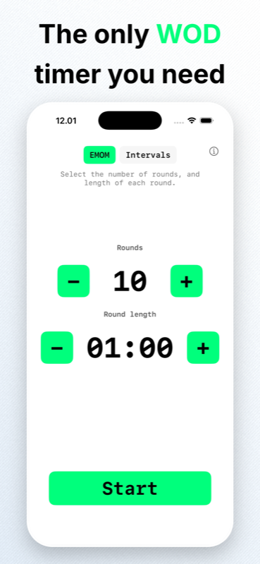
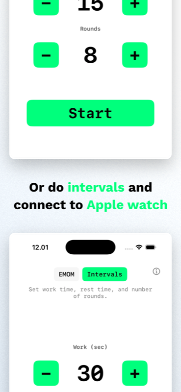

EMOM & Interval Timer
The only
WOD timer
you need.
Built for CrossFit, HIIT and Tabata. Start on iPhone, follow on Apple Watch. Or train from your Mac, iPad and Apple TV. Zero setup, zero accounts, zero noise.
Download Free on the App Store iPhone · iPad · Apple Watch · Mac · Apple TV
iPhone & Apple Watch
Start a workout on your iPhone. Your Apple Watch picks it up instantly. Or run the timer directly on the Watch when your phone is in the locker.


Built for the workout
-
EMOM Timer
Every Minute on the Minute. Set 1 to 120 rounds with custom round length from 30 seconds to 9:30. Large numbers, one-handed use.
-
Interval Timer
Configure work time, rest time and rounds. Tabata-style 20/10 × 8 is just a preset away. Perfect for HIIT, circuit training and Tabata.
-
iPhone → Watch
Start a timer on iPhone and follow it live on Apple Watch. Same countdown, same round, same state. Or run standalone on the Watch.
-
Apple Health
Completed workouts save to Apple Health as HIIT sessions. Your Activity rings and Fitness app reflect every workout. iOS only.
Every screen. Same timer.
WODrounds is a native app on every Apple platform. Not a web wrapper. Built with SwiftUI for each device, with the same engine under the hood.

Mac
Compact window that stays out of the way. Dark and light mode. Perfect for timing from your desk.

Apple TV
Your timer on the big screen. Navigate with the Siri Remote. Visible from across the gym or garage.

iPad
Full-screen timer optimized for iPad. Prop it up, start your workout, and see the countdown from anywhere in the room.
EMOM or Intervals.
Your call.
Two modes, zero bloat. EMOM gives you a round counter with a configurable minute. Intervals give you work, rest and rounds. Both modes support sound cues and a 10-second countdown to get ready.
- 10-second countdown before every workout
- Sound cues at 30 seconds remaining
- Haptic feedback on round transitions
- Pause, resume or cancel anytime

A tool, not a feed
WODrounds does one thing well. It times your workout. No social features, no subscription, no data harvesting. Open the app, set your timer, press start.
- No sign-in or accounts required
- No analytics, tracking or ads
- No subscription — free, forever
- No cloud database. Everything stays on your device
- Optional Apple Health write-only on iOS
Start timing your workout
Available free on the App Store for iPhone, iPad, Apple Watch, Mac and Apple TV.
Download WODrounds Works offline. No account needed.